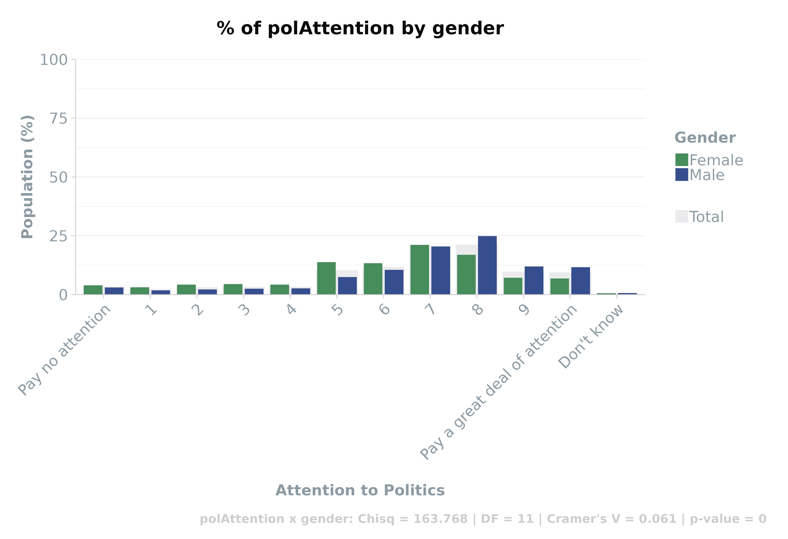

Cross-tabulation is a cornerstone of survey data analysis,
offering deep dives into the interplay between different variables. The
scgUtils package equips researchers with robust tools to
execute and visualise these complex relationships. This guide explores
the nuanced functionalities of crosstab() and
compile(), designed to streamline your analytical workflow.
Dynamically Structuring Data with crosstab()
crosstab() transforms survey responses into meaningful
two-by-two tables, enriched with statistical analyses. Tailor the
presentation of your data with flexible output formats, catering to wide
or long data frames for diverse analytical approaches.
####
Wide Format Cross-Tabulation This example demonstrates
how to generate a wide-format table, incorporating optional statistical
measures for enhanced insights.
# Wide format
crosstab(df,
rowVar = "partyId",
colVar = "gender",
weight = "wt", # optional
format = "df_wide", # default = df_long which is useful for plotting
round_decimals = 2, # optional
statistics = TRUE # optional
) %>%
head()#> [1] "partyId x gender: Chisq = 29.054 | DF = 9 | Cramer's V = 0.028 | p-value = 0.001"| partyId | Total | Female | Male |
|---|---|---|---|
| Conservative | 29.26 | 27.41 | 30.85 |
| Labour | 24.14 | 25.38 | 23.09 |
| Liberal Democrat | 5.84 | 5.64 | 6.00 |
| Scottish National Party (SNP) | 2.55 | 2.89 | 2.26 |
| Plaid Cymru | 0.37 | 0.32 | 0.41 |
| Green Party | 2.52 | 2.17 | 2.81 |
Visual Insights from Crosstabs
Leverage crosstab() with plot = TRUE to
convert tabular data into visual representations. This fusion of data
and design aids in the intuitive grasp of distribution patterns,
supported by statistical depth.
crosstab(df,
rowVar = "p_eurefvote",
colVar = "p_edlevel",
weight = "wt",
plot = TRUE,
statistics = TRUE,
round_decimals = 2
) %>%
head()#> [1] "p_eurefvote x p_edlevel: Chisq = 371.026 | DF = 10 | Cramer's V = 0.243 | p-value = 0"| p_eurefvote | p_edlevel | Freq | Perc |
|---|---|---|---|
| I voted to remain | No qualifications | 56.18 | 23.49 |
| I voted to leave | No qualifications | 182.98 | 76.51 |
| Don’t know | No qualifications | 0.00 | 0.00 |
| I voted to remain | Below GCSE | 43.66 | 27.47 |
| I voted to leave | Below GCSE | 115.30 | 72.53 |
| Don’t know | Below GCSE | 0.00 | 0.00 |
Enhancing Plot Readability
Adjust X-axis labels with adjustX = TRUE for clearer
interpretation of densely populated variables, ensuring data
accessibility.
crosstab(df,
rowVar = "polAttention",
colVar = "gender",
weight = "wt",
plot = TRUE,
statistics = TRUE,
adjustX = TRUE,
round_decimals = 2
) %>%
head()#> [1] "polAttention x gender: Chisq = 163.768 | DF = 11 | Cramer's V = 0.061 | p-value = 0"
| polAttention | gender | Freq | Perc |
|---|---|---|---|
| Pay no attention | Male | 65.46 | 3.04 |
| 1 | Male | 39.89 | 1.85 |
| 2 | Male | 47.53 | 2.21 |
| 3 | Male | 54.82 | 2.55 |
| 4 | Male | 56.93 | 2.64 |
| 5 | Male | 161.07 | 7.48 |
Streamlining Analysis with compile()
For extensive variable sets, compile() emerges as a
powerful ally. It aggregates crosstabs and statistical summaries into a
comprehensive data frame, simplifying the exploration of intricate data
relationships.
#### Statistical Compilation
Demonstrate the compile() function’s capability to organise
a broad spectrum of statistics, including Chi-square, Degrees of
Freedom, Cramer’s V, and p-value, offering a scaffold for informed
decision-making.
# the row variables are typically your questions within the survey. For ease, utilise dplyr to select the variables
rowVars <- names(df %>% dplyr::select(turnoutUKGeneral:partyIdStrength,
partyIdSqueeze:likeGrn,
pcon:p_hh_size,
p_disability:p_past_vote_2019,
p_eurefturnout))
# the column variables tend to be the demographic variables
colVars <- c("gender", "ageGroup", "p_socgrade", "partyId", "p_eurefvote", "p_edlevel")
# compile stats and save to data frame called `stats`
stats <- compile(df,
rowVars = rowVars,
colVars = colVars,
weight = "wt", # optional
save = FALSE, # turn this to FALSE to prevent saving as a .csv
format = "statistics")
# View first 10, sorted by Cramer's V
head(stats[order(-stats$CramersV),], 10)| Row_Var | Col_Var | Size | Chisq | DF | CramersV | p_value | |
|---|---|---|---|---|---|---|---|
| 10 | generalElectionVote | partyId | 3953.314 | 10049.807 | 81 | 0.531 | 0 |
| 316 | p_past_vote_2017 | partyId | 3545.672 | 5251.916 | 72 | 0.430 | 0 |
| 52 | bestOnMII | partyId | 3719.803 | 5886.195 | 81 | 0.419 | 0 |
| 310 | p_past_vote_2015 | partyId | 3567.690 | 5054.699 | 81 | 0.397 | 0 |
| 258 | p_education_age | p_edlevel | 3465.861 | 3157.122 | 30 | 0.390 | 0 |
| 322 | p_past_vote_2019 | partyId | 3551.306 | 4736.332 | 90 | 0.365 | 0 |
| 248 | p_job_sector | ageGroup | 3991.109 | 1706.840 | 20 | 0.327 | 0 |
| 200 | p_work_stat | ageGroup | 3991.109 | 2857.155 | 35 | 0.320 | 0 |
| 298 | p_past_vote_2010 | partyId | 3511.013 | 3182.663 | 81 | 0.317 | 0 |
| 304 | p_past_vote_2005 | partyId | 3222.173 | 2868.127 | 81 | 0.314 | 0 |
NB caution using chi-square and p-values when the sample
size is >500 or <5. In these circumstances, use Cramer’s V or
Fisher’s Exact test, respectively.
Expansive Tables with compile()
The compile() function in scgUtils excels
in generating comprehensive crosstab tables. It efficiently processes
each variable pair within your dataset, producing detailed tabular
outputs. These tables can be formatted and saved as CSV files, making
them perfect for inclusion in reports or further analysis.
rowVars <- names(df %>% dplyr::select(turnoutUKGeneral:partyIdStrength,
partyIdSqueeze:likeGrn,
pcon:p_hh_size,
p_disability:p_past_vote_2019,
p_eurefturnout))
colVars <- c("gender", "ageGroup", "p_socgrade", "partyId", "p_eurefvote", "p_edlevel")
compile(df,
rowVars = rowVars,
colVars = colVars,
weight = "wt", # optional
name = "crosstabs" # this will save as "crosstabs.csv"
)
The ability
to create such extensive tables is invaluable for presenting a holistic
view of your survey results, encompassing various aspects and
relationships within your data.